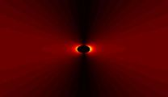
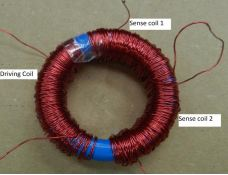

Flux Gate Magnetometer
This report presents a magnetometer designed to detect vehicles in optically and thermally obscured environments. Due to the ferromagnetic properties of materials used in the construction of vehicles, vehicles perturb the Earth’s magnetic field. The magnetometer senses these perturbations through electromagnetic induction. Signal processing techniques are employed to harness and amplify actual signal from environmental noise. The design, layout, physics, principles of operation, performance characteristics and limitations are theoretically and experimentally discussed in this paper. We found that the transfer characteristics are extremely non-linear and the device is limited by Johnson noise.
This research was undertaken as part of Carnegie Mellon University's Spring 2012 Sensor System Design course.
Collaborators
Ee Kent Lew
Dr. Tamal Mukherjee
Dr. David Lambeth
Downloads
Paper PDF
Poster PDF
Pictures
MATLAB simulation of the magnetic field strength as a function of radius, with no perturbation. The field decays proportionally to 1/r^2.

Picture of the magnetometer sensor prototype. Hand-wound with iron core.
